Research Interests
- Magnetic Microrobots
- Bioinspired Soft Robotics
- Drug Delivery
Education
Nankai University, China · School of Artificial Intelligence · Intelligent Science and Technology (B.Eng.) 2023.09 – 2027.06
Research Map
🔍 Click the map to enlarge — highly recommended


Research Experience
PROJECT 01Petal-inspired magnetic multilayer flexible robot for gastric applications
A Petal-inspired Magnetic Multilayer Flexible Robot for Gastric Applications
First author | Published | IEEE CBS 2025 Oral Presentation
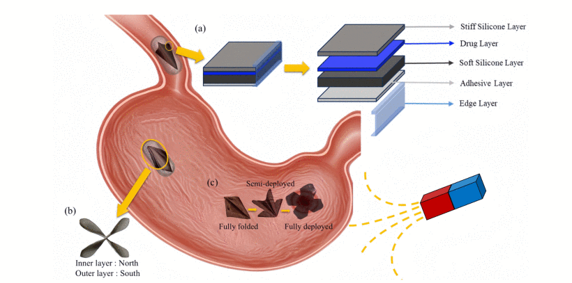
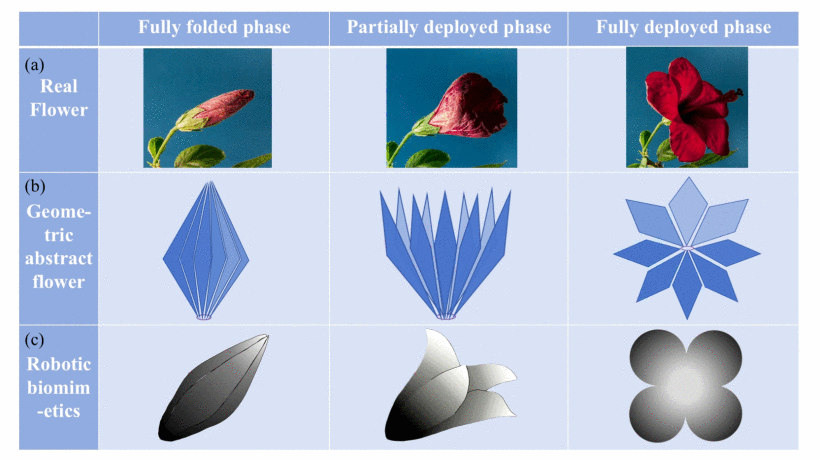
Research Question
My Contributions
Methods and Techniques
Results
PROJECT 02Surface modification and pose optimization for upstream locomotion of a vascular magnetic millirobot
Effects of Surface Modification and Pose Optimization on Upstream Ability of an Untethered Magnetic Millirobot
Second author | IEEE/ASME TMECH submission | earlier TIE Major Revision
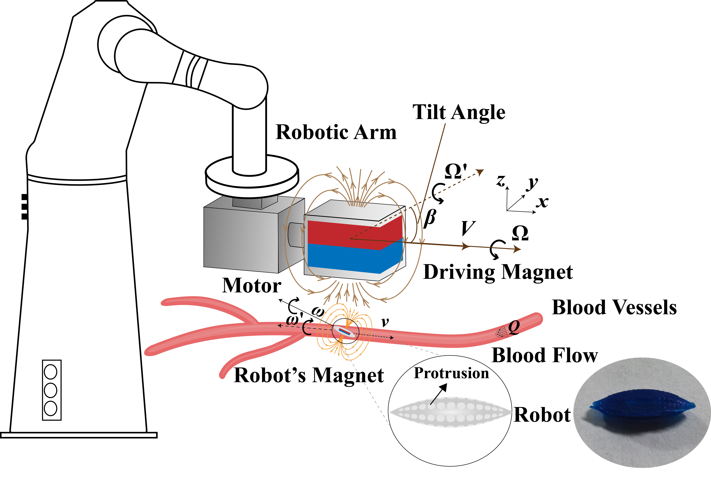
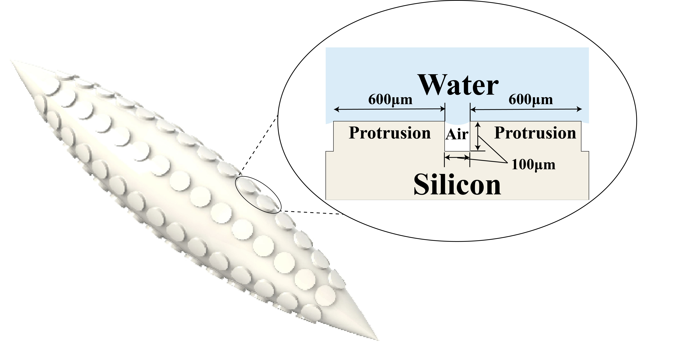
Research Question
My Contributions
Methods and Techniques
Results
PROJECT 03Capsule robot for in situ sampling and study of enteric pathogens
A Capsule Robot for In Situ Sampling and Study of Enteric Pathogens
Sole student participant | Core proposal writer | RMB 1.5M project funded
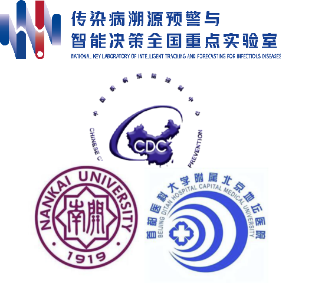
Research Question
My Contributions
Methods and Techniques
Results
PROJECT 04Dual-Janus magnetic soft robotic platform for multi-target drug release in the stomach
A Dual-Janus Magnetically Actuated Soft Robotic Platform for Multi-Target Drug Release in the Stomach
First author | Platform under development | Manuscript in preparation (not submitted)
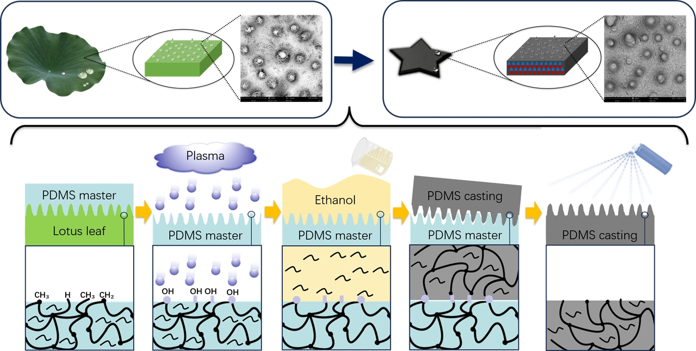
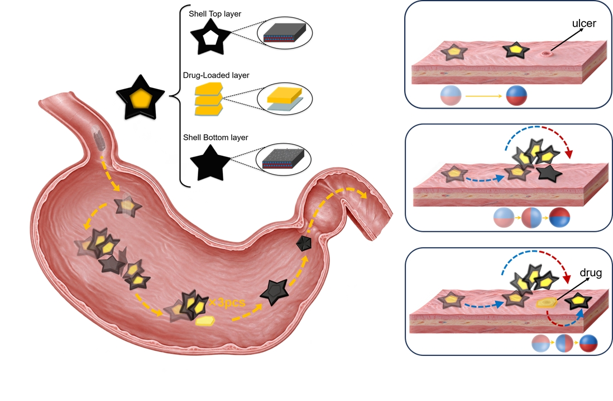
Research Question
My Contributions
Methods and Techniques
Results
Research Skills
Projects & Practice
Projects & Competitions
Pingxiaomi: a business-optimisation agent for micro-merchants 2025 – 2026
National AI Application Scenario Innovation Challenge, General AI track · National Second Prize · Project lead
Alibaba LLM Winter Camp 2025.01 – 2025.02
ByteDance · Doubao LLM 2025.03 – 2025.06
Wildlife image analysis, Nankai “Hundred Projects” undergraduate innovation programme
Internships
Deloitte Consulting · FAW-Toyota digitalisation programme 2026.01 – 2026.03
Product intern (dealer management DMS / sales CRM)
A.T. Kearney · Part-time assistant 2025.07 – present
2025 SCO Summit · CCTV supplier 2025.08 – 2025.09
Assistant engineer
Campus & Service
Campus ambassador, EY · Unilever · Baidu 2024.06 – 2025.06
Nankai University Publicity Department · Deputy head, video division 2024.06 – 2025.06
Nankai Ecological Mathematics Research Centre · Core member 2023.09 – 2025.04
Photography, video and content operations
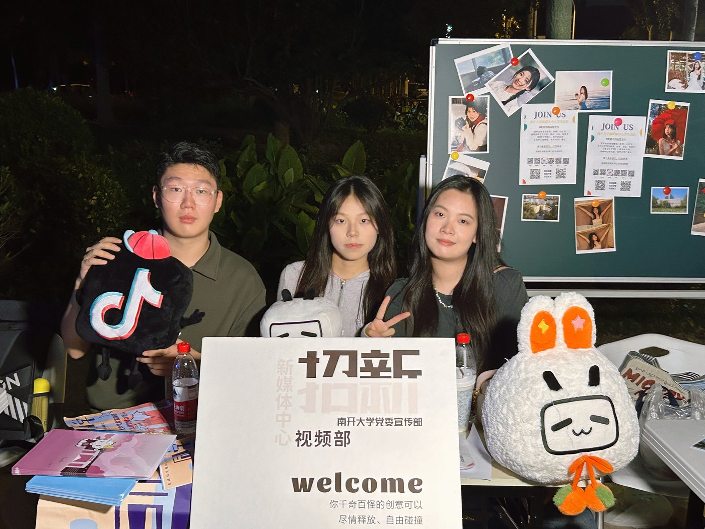
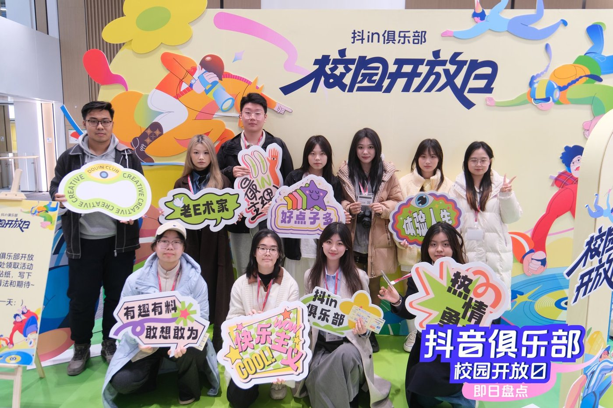
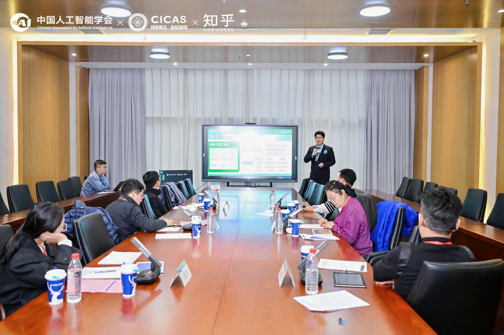
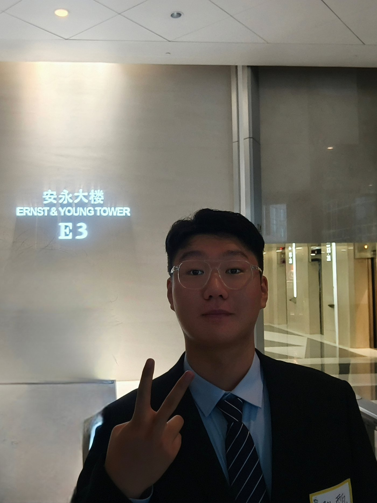
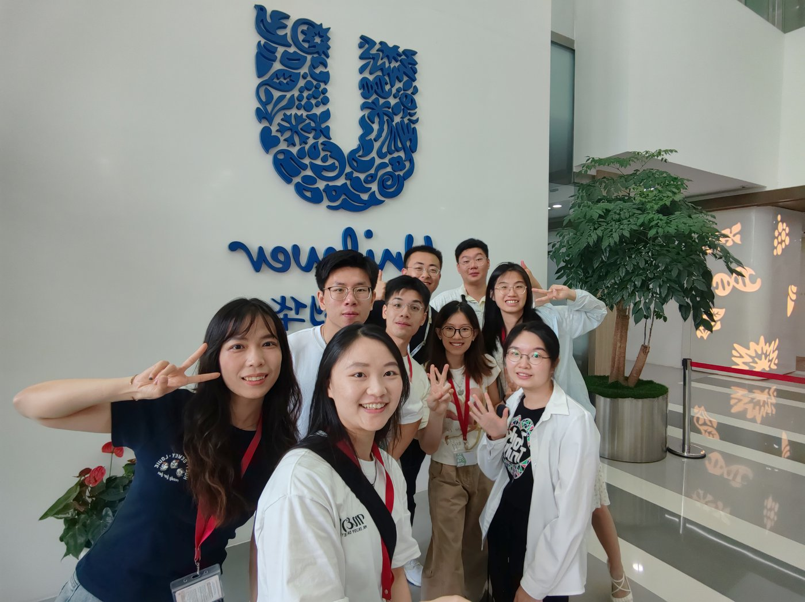
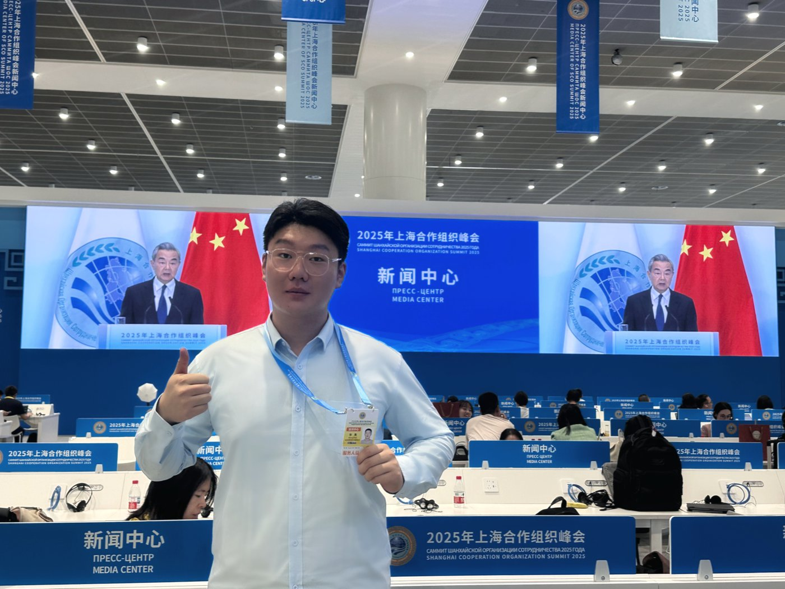